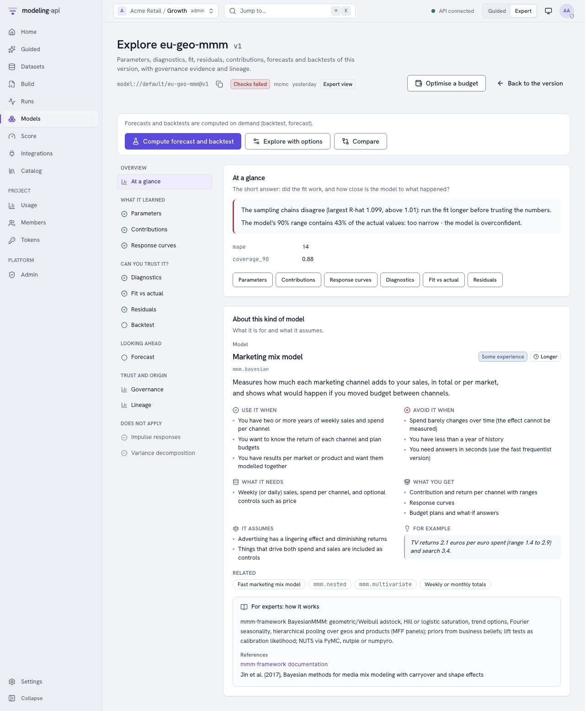
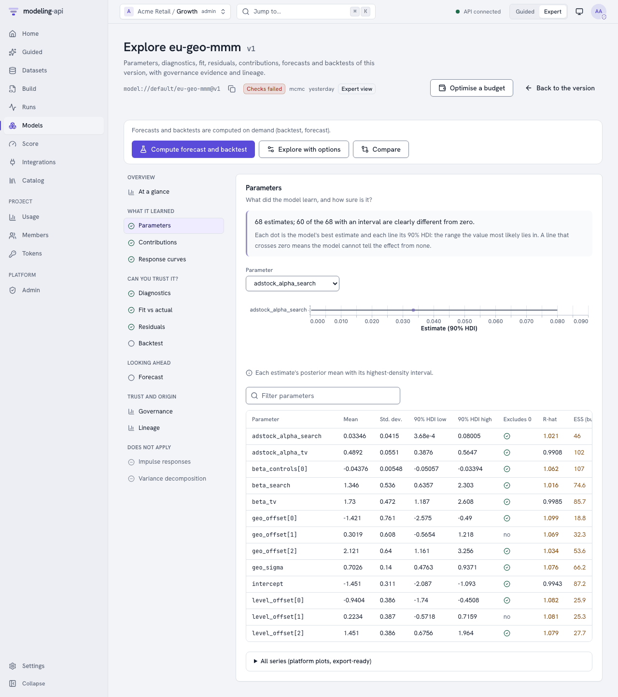
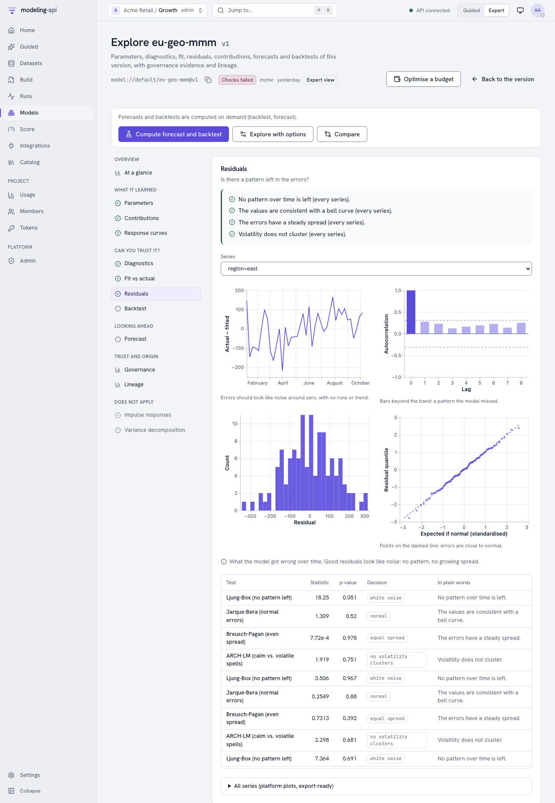
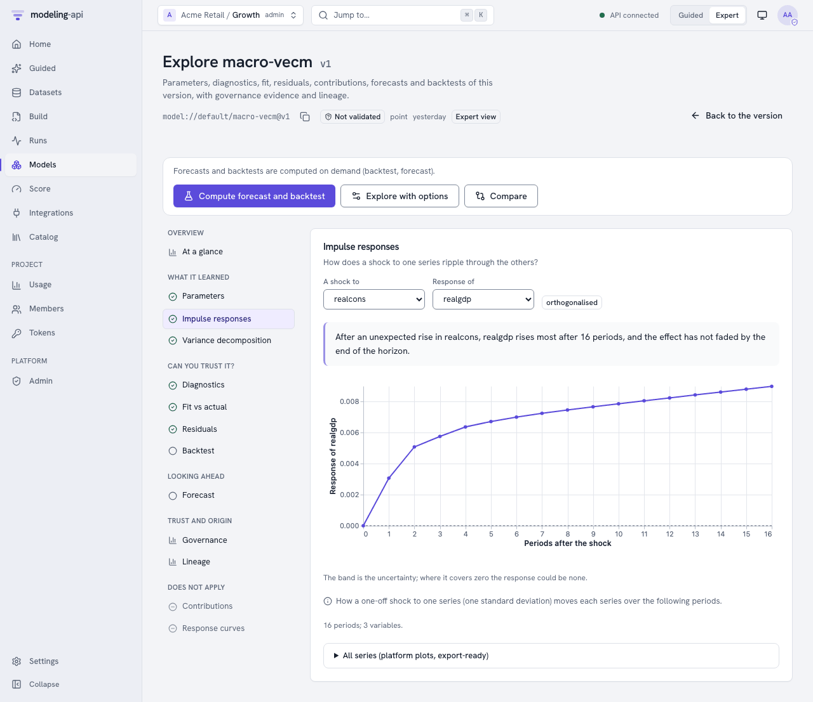
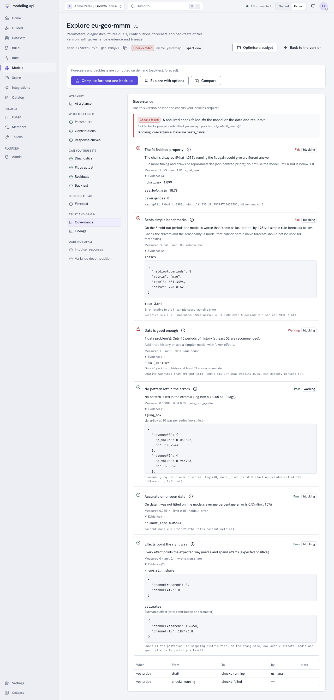
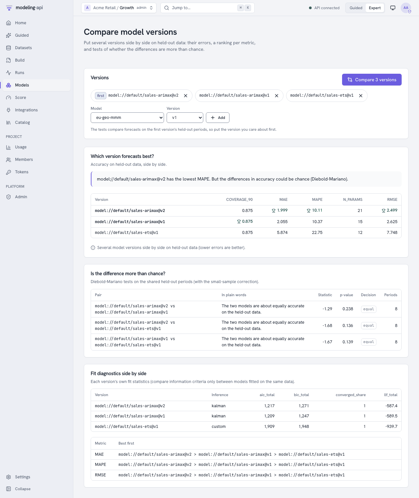
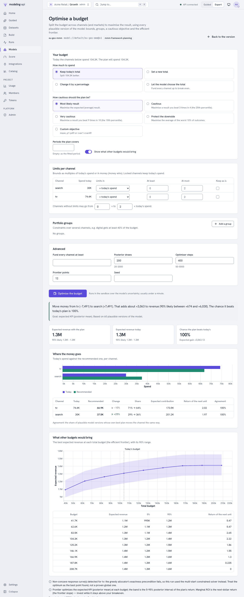

Explore a model v0.5¶
The Model Explorer shows what a fitted model learned and how well it works. It does this for all model families:
- Bayesian: posterior means with highest-density intervals, and R-hat.
- Frequentist: estimates with confidence intervals and p-values, and information criteria.
- Machine learning: coefficients or importances.
The sandbox calculates the views from the bundle and the data that the fit used. The views come with Vega-Lite plots. The web app shows each section with governance evidence and lineage. It also compares versions and optimises budgets. The rest of this guide uses the HTTP API that the web app calls.
In the web app¶
The page of a model version has Explore and Compare. For marketing-mix models, it also
has Optimise budget. The Model Explorer (/models/<model>/versions/<n>/explore) puts its
sections into groups by the question that they answer:
| Group | Sections |
|---|---|
| Overview | At a glance: the plain readings of the diagnostics and the fit, the holdout metrics and the About card of the model |
| What it learned | Parameters (a table that you can sort and filter, with intervals, p-values, R-hat and ESS, and a forest plot for each parameter), contributions, response curves, impulse responses and variance decomposition |
| Can you trust it? | Diagnostics (convergence, fit statistics for each series, the tests of the model), fit vs actual (with the coverage of the band in plain words), residuals (over time, ACF, histogram, QQ plot, Ljung-Box, Jarque-Bera, Breusch-Pagan and ARCH-LM), backtest |
| Looking ahead | Forecast (a fan for each series) |
| Trust and origin | Governance (the status badge of the latest validation, each check with its evidence, the status history) and lineage (dataset, spec revision, fit run and workflow run, and also plugin, image, seed and libraries) |
The explorer lists the sections that do not apply to the model last, with the reason. For example, an MMM has no impulse responses. The explorer calculates forecasts and backtests only when you ask:
- Click Compute forecast and backtest.
- Or click Explore with options. Then set the horizon, the interval and the backtest plan. The plan has these items: expanding window or rolling origin, horizons, folds, minimum training periods and gap.
As in the Data Explorer, Guided mode shows the plain reading first. Expert mode shows all the numbers.





The header shows the validation status of the version. It has a link to the validations of the version, where you can request a new validation. Under Governance evidence, these links show:
- Open this validation goes to the latest validation: its status path, the decisions of the reviewers and the evidence pack.
- Policies goes to the governance policies. See Validate models with governance policies.
If a workflow fitted the version, Lineage has a link to the monitor of the workflow run.
Compare (/models/compare) shows two to eleven versions side by side. To use it:
- Select each model and version. The tests use the first version as the reference.
- Click Compare.
The page shows these items:
- The holdout metrics, with a mark on the best value of each metric.
- The Diebold-Mariano tests in plain words. For example, "about equally accurate", or an advantage that is more than chance.
- The ranking for each metric.
- The fit statistics of each version.
Time-series forecasters (statsmodels and the other ts models) forecast the full held-out
period from one origin. Thus their errors make a single path, and no test of equal accuracy is
valid on it. For these models, the page shows the metrics and rankings. It tells you to
compare their backtests. You can also run a compare.diebold_mariano workflow node on
rolling-origin backtest errors.

Optimise budget (/models/<model>/versions/<n>/optimize) is only for marketing-mix
models. It asks for these items:
- How much to spend: the current total, a new total, a change in percent, or the total that the model would select. The last option is only in Expert mode.
- How careful to be: the expected result, the 25th or 10th percentile, or the average of the worst 10%.
- Limits for each channel: multiples of the current spend, an amount of money, or no change.
- Portfolio groups and the frontier.
If the page cannot meet a bound, it tells you why before anything runs. The plan reads like this: "Move money from tv (−7,491) to search (+7,491). That adds about +3,063 to revenue (90% likely between +674 and +6,030)…". The plan also shows these items:
- The allocation for each channel (and market).
- The expected result now and with the plan.
- The probability that the plan is better than the current allocation.
- The return of the next unit for each channel.
- The efficient frontier.
The expected results show the number of digits that is necessary to make the two ends of each
range different. For example, "1.305M – 1.312M", not "1.3M – 1.3M". In Guided mode, the What
if… step goes to this page with Optimise my budget. The page gives the goal and the notes
of the optimiser in plain words, for example "Goal: the most likely revenue". The text of the
optimiser itself is under For experts: how the plan was found. The request and the result
are the request and result of
POST …:optimize.

From Python and the command line¶
model_id, version = "mdl_01jaf3c1d2e3f4g5h6j7k8m9n0", 3
explored = api.models.explore(
model_id, version, sections=["params", "residuals", "forecast"], horizon=13
)
residuals = api.explorations.view(explored, "residuals")
compared = api.models.compare(
["model://growth/arimax@v3", "model://growth/ets@v1", "model://growth/theta@v2"], horizon=4
)
table = api.explorations.view(compared, "comparison") # metrics, ranking, Diebold-Mariano
mapi explore model model://growth/sales-arimax@v2 -s params -s residuals -s irf --horizon 12
mapi explore compare model://growth/sales-arimax@v2 model://growth/sales-ets@v1 --horizon 4
Views written at fit¶
Each fit writes params, diagnostics, fit, residuals, decomposition,
response_curves, irf, fevd and fields. The fit lists the sections that do not apply to the model
as skipped, with the reason. Read the index and the views through the UI route of the model
version:
api "$API/v1/models/$MODEL_ID/versions/3/artifacts/ui/explore/index.json"
api "$API/v1/models/$MODEL_ID/versions/3/artifacts/ui/explore/residuals.json"
Forecasts, backtests and more, on demand¶
api -X POST "$API/v1/models/$MODEL_ID/versions/3/explore" -d '{
"sections": ["forecast", "backtest"],
"horizon": 12,
"backtest": {"kind": "expanding_window", "horizons": [1, 4, 12], "n_folds": 5,
"min_train": 104}
}'
The answer (202) is an Exploration. Poll GET /v1/explorations/{run_id} to get the index
and the signed view links. If you send the same request again, the answer is 200 from the
last run.
Compare model versions¶
api -X POST "$API/v1/models:compare" -d '{
"models": ["model://growth/sales-arimax@v3", "model://growth/sales-ets@v1",
"model://growth/sales-mmm@v2"]
}'
This call explores the first version with the other versions as compare_with. It writes the
comparison view, which has these items:
- The holdout metrics of each version, side by side.
- A ranking for each error metric. A lower value is better.
- Pairwise Diebold-Mariano tests on the held-out periods of the first version. The tests use the Harvey-Leybourne-Newbold small-sample correction and a Newey-West number of autocovariances. They answer the question "is the difference in accuracy more than chance?".
If a version forecasts the held-out periods from one origin (time-series forecasters), the
view does not include the tests. It gives a warning. For more sections, add
"sections": ["comparison", "params"].
The sections¶
| Section | What you see | Families |
|---|---|---|
params |
One row for each parameter cell: mean, sd, interval (hdi_90 for Bayesian, ci_90 for other models), p-value, R-hat, bulk ESS |
all with parameters |
diagnostics |
R-hat max, ESS min, divergences, optimiser status, AIC/BIC, holdout metrics, the diagnostics of the plugin, warnings in plain words | all |
fit |
Actual against fitted with a 90% band, and the split line at the first held-out period | models over time |
residuals |
Residuals over time, their ACF, Ljung-Box, Jarque-Bera, Breusch-Pagan and ARCH-LM tests, a histogram and a normal QQ plot | models over time |
decomposition |
The contributions of the model over time (added over markets) and the share of each part | models with a component output (MMMs, linear models) |
response_curves |
Mean contribution for each channel at each spend level, with a 90% band | MMMs with a response grid |
irf |
Impulse responses (response × shock × horizon) with bands | VAR, VARMAX, VECM |
fevd |
Forecast-error variance decomposition | VAR, VARMAX, VECM |
fields |
Each output on a 2-D grid as an image: the mean, the sd, the mean÷sd, the 5% and 95% quantiles and some posterior draws for each frame, with arrows for a vector field. Play the draws to see some possible fields that agree with the data | models with an output that has a grid (maps, images, space-time fields) |
forecast |
A forecast fan over horizon periods after the history. The drivers stay at their last values |
models that forecast |
backtest |
New fits on a rolling-origin or expanding-window plan: metrics for each fold and horizon, against "same as last period" and "same as last season" | models over time |
comparison |
More than one version side by side (above) | all |
For plugin authors: what the explorer reads¶
The explorer does not depend on the model. Plugins get these views if they follow some conventions:
- Predictions come from the score path (
predict, expected values). Thus each plugin getsfitandresidualsautomatically. -
Parameters: The explorer reads them from these sources, in this sequence:
- The
posteriorgroup (chain, draw). - A
paramsorcoefficientsgroup. This group is a table (variablesestimate, and optionallystd_err,p_value,ci_lower,ci_upperalong one parameter dim). Or it has one variable for each parameter. learned["params"]as{name: number}or{name: {estimate, std_err, p_value, ci_lower, ci_upper}}.
Confidence intervals without explicit bounds are
estimate ± z · std_err. - The
-
Convergence: Diagnostics with the code
RHAT/ESS_BULK,sample_stats.diverging,learned["converged"](a bool) or aNOT_CONVERGEDdiagnostic, andlearned["aic"|"bic"|"llf"]. - Decomposition: An output with a
componentdim (contributions). - Impulse responses: A group or derived quantity
irfwith the variableirfover(response, shock, horizon)(optionallower/upper), andfevdover(variable, horizon, shock). - Response curves: The
response_curvesderived quantity that the what-if sliders use.
The governance checks use the same reads (see Validate models with governance policies).